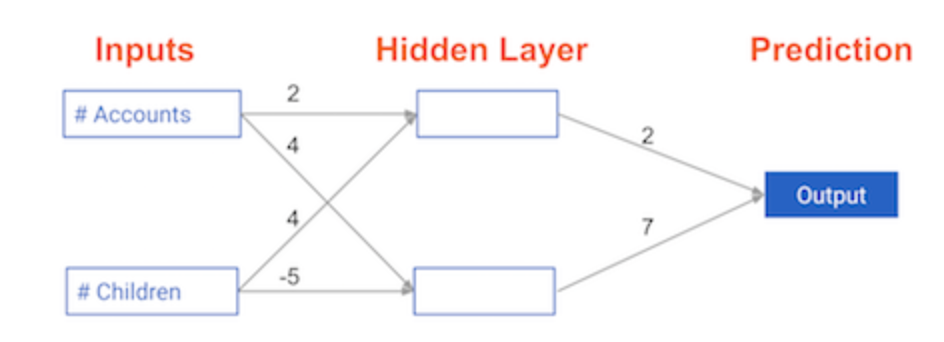
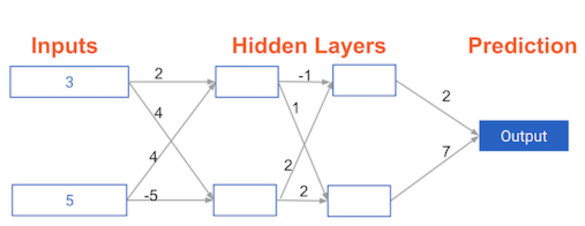

Code
import numpy as np
import pandas as pdkakamana
April 3, 2023
It is in this chapter that you will gain an understanding of the fundamental concepts and terminology used in deep learning, as well as why these techniques are so powerful today. With the help of simple neural networks, you will be able to generate predictions.
This Basics of deep learning and neural networks is part of [Datacamp course: Introduction to Deep Learning in Python] In a wide range of fields such as robotics, natural language processing, image recognition, and artificial intelligence, including AlphaGo, deep learning is the technique behind the most exciting capabilities. As part of this course, you will gain hands-on, practical experience using deep learning with Keras 2.0, the latest version of a cutting-edge Python library for deep learning.
This is my learning experience of data science through DataCamp. These repository contributions are part of my learning journey through my graduate program masters of applied data sciences (MADS) at University Of Michigan, DeepLearning.AI, Coursera & DataCamp. You can find my similar articles & more stories at my medium & LinkedIn profile. I am available at kaggle & github blogs & github repos. Thank you for your motivation, support & valuable feedback.
These include projects, coursework & notebook which I learned through my data science journey. They are created for reproducible & future reference purpose only. All source code, slides or screenshot are intellactual property of respective content authors. If you find these contents beneficial, kindly consider learning subscription from DeepLearning.AI Subscription, Coursera, DataCamp
In this exercise, you’ll write code to do forward propagation (prediction) for your first neural network 
Each data point is a customer. The first input is how many accounts they have, and the second input is how many children they have. The model will predict how many transactions the user makes in the next year.
node_0_value = (input_data * weights['node_0']).sum()
# Calculate node 1 value: node_1_value
node_1_value = (input_data * weights['node_1']).sum()
# Put node values into array: hidden_layer_outputs
hidden_layer_outputs = np.array([node_0_value, node_1_value])
# Calculate output: output
output = (hidden_layer_outputs * weights['output']).sum()
# Print output
print(output)-39An “activation function” is a function applied at each node. It converts the node’s input into some output.
The rectified linear activation function (called ReLU) has been shown to lead to very high-performance networks. This function takes a single number as an input, returning 0 if the input is negative, and the input if the input is positive.
Here are some examples: relu(3) = 3 relu(-3) = 0
def relu(input):
'''Define your relu activatino function here'''
# Calculate the value for the output of the relu function: output
output = max(0, input)
# Return the value just calculate
return output
# Calculate node 0 value: node_0_output
node_0_input = (input_data * weights['node_0']).sum()
node_0_output = relu(node_0_input)
# Calculate node 1 value: node_1_output
node_1_input = (input_data * weights['node_1']).sum()
node_1_output = relu(node_1_input)
# Put node values into array: hidden_layer_outputs
hidden_layer_outputs = np.array([node_0_output, node_1_output])
# Calculate model output (do not apply relu)
model_output = (hidden_layer_outputs * weights['output']).sum()
# Print model output
print(model_output)
print("\nYou predicted 52 transactions. Without this activation function, you would have predicted a negative number! The real power of activation functions will come soon when you start tuning model weights.")52
You predicted 52 transactions. Without this activation function, you would have predicted a negative number! The real power of activation functions will come soon when you start tuning model weights.You’ll now define a function called predict_with_network() which will generate predictions for multiple data observations
def predict_with_network(input_data_row, weights):
# Calculate node 0 value
node_0_input = (input_data_row * weights['node_0']).sum()
node_0_output = relu(node_0_input)
# Calculate node 1 value
node_1_input = (input_data_row * weights['node_1']).sum()
node_1_output = relu(node_1_input)
# Put node values into array: hidden_layer_outputs
hidden_layer_outputs = np.array([node_0_output, node_1_output])
# Calculate model output
input_to_final_layer = (hidden_layer_outputs * weights['output']).sum()
model_output = relu(input_to_final_layer)
# Return model output
return(model_output)
# Create empty list to store prediction results
results = []
for input_data_row in input_data:
# Append prediction to results
results.append(predict_with_network(input_data_row, weights))
# Print results
print(results)[52, 63, 0, 148]In this exercise, you’ll write code to do forward propagation for a neural network with 2 hidden layers. Each hidden layer has two nodes The input data has been preloaded as input_data. The nodes in the first hidden layer are called node_0_0 and node_0_1. Their weights are pre-loaded as weights[‘node_0_0’] and weights[‘node_0_1’] respectively.
The nodes in the second hidden layer are called node_1_0 and node_1_1. Their weights are pre-loaded as weights[‘node_1_0’] and weights[‘node_1_1’] respectively.
We then create a model output from the hidden nodes using weights pre-loaded as weights[‘output’].

def predict_with_network(input_data):
# Calculate node 0 in the first hidden layer
node_0_0_input = (input_data * weights['node_0_0']).sum()
node_0_0_output = relu(node_0_0_input)
# Calculate node 1 in the first hidden layer
node_0_1_input = (input_data * weights['node_0_1']).sum()
node_0_1_output = relu(node_0_1_input)
# Put node values into array: hidden_0_outputs
hidden_0_outputs = np.array([node_0_0_output, node_0_1_output])
# Calculate node 0 in the second hidden layer
node_1_0_input = (hidden_0_outputs * weights['node_1_0']).sum()
node_1_0_output = relu(node_1_0_input)
# Calculate node 1 in the second hidden layer
node_1_1_input = (hidden_0_outputs * weights['node_1_1']).sum()
node_1_1_output = relu(node_1_1_input)
# Put node values into array: hidden_1_outputs
hidden_1_outputs = np.array([node_1_0_output, node_1_1_output])
# Calculate model output: model_output
model_output = (hidden_1_outputs * weights['output']).sum()
# Return model_output
return model_output
output = predict_with_network(input_data)
print(output)182